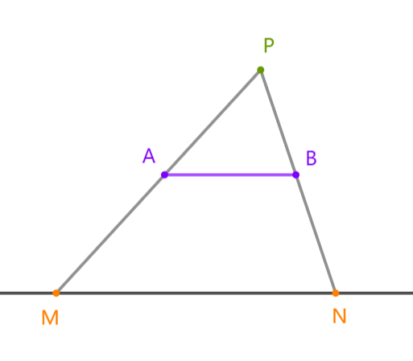
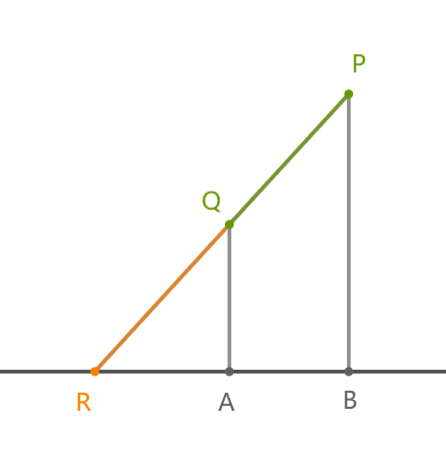

一个石油井所对应的直线，必然可以进行一定的平移与旋转，使得这条直线经过一个石油矿的端点且经过的石油矿线段长度总和不必原先的短。
枚举经过的石油矿的端点。
考虑这条直线与 轴的交点在什么区间内时，这条直线会经过某个石油矿线段。容易作出这样的图形：

设 为已经选定的石油矿线段的一端，线段 为另一个石油矿线段，只需连接 与 轴交于 点，连接 与 轴交于 点，则容易得出过 的一条直线经过线段 时，必定也经过线段 。
考虑已知 三点，如何求出 。事实上，我们只需要编写一个函数计算直线 与 轴的交点 的 坐标 即可。

易得 ，解得
问题转化为给定若干区间，求出一个值最大化包含这个值的区间的长度总和。只需按照 坐标大小从前往后扫描一遍即可。
单个数据时间复杂度 。
// 2022.07.31
#include<bits/stdc++.h>
using namespace std;
long double cal(int x,int y,int x_,int y_){
return(x_-x)*(long double)y/(y-y_)+x;
}
int n;
struct Mine{
int l,r,y;
}a[2001];
struct Interval{
long double l,r;
int value;
bool operator<(Interval tmp)const{
return l<tmp.l;
}
}b[2001];
struct Node{
long double x;
int value;
bool operator<(Node tmp)const{
return x>tmp.x;
}
};
int cnt;
inline long long work(int x,int y){
cnt=0;
for(int i=1;i<=n;i++){
if(a[i].y==y)continue;
long double L=cal(x,y,a[i].l,a[i].y),
R=cal(x,y,a[i].r,a[i].y);
if(L>R)swap(L,R);
b[++cnt]={L,R,a[i].r-a[i].l};
}
sort(b+1,b+1+cnt);
long long sum=0,maxn=0;
priority_queue<Node> Q;
for(int i=1;i<=cnt;i++){
Q.push({b[i].r,b[i].value});
sum+=b[i].value;
while(!Q.empty()&&Q.top().x<b[i].l)
sum-=Q.top().value,Q.pop();
maxn=max(sum,maxn);
}
return maxn;
}
int main(){
while(~scanf("%d",&n)){
for(int i=1;i<=n;i++){
scanf("%d%d%d",&a[i].l,&a[i].r,&a[i].y);
if(a[i].l>a[i].r)swap(a[i].l,a[i].r);
}
long long ans=0;
for(int i=1;i<=n;i++){
ans=max(ans,work(a[i].l,a[i].y)+abs(a[i].l-a[i].r));
ans=max(ans,work(a[i].r,a[i].y)+abs(a[i].l-a[i].r));
}
printf("%lld\n",ans);
}
return 0;
}